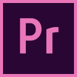
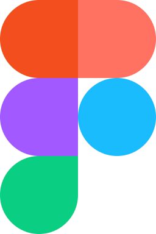

HVEM ER JEG?
Mit navn er Mathilde Lund Hansen. Jeg er 22 år gammel og skal netop til at afslutte mit første
semester på uddannelsen
som multimediedesigner. Jeg har valgt uddannelsen som multimediedesigner, fordi jeg er
særdeles
kreativt anlagt og
elsker at nørde ned i små detaljer for at finde det udtryk i designet, som jeg ønsker.
I
fremtiden
ser jeg mig selv som
grafisk designer, og jeg ser uddannelsen som værende en fordel ift., at jeg har et ønske om en dag
at være selvstændig,
hvor jeg forhåbentligt vil have tilegnet mig kompetencerne til at udvikle mit eget website og bruge
diverse
programmer som hjælp
til at skabe mit brand.
Her ser i mit CV:
Jeg blev student fra Randers Statsskole i 2020 og havde Engelsk A og Samfundsfag A.
Jeg kan bruge Adobe Illustrator, bl.a. til at lave baggrunde, figurer og andre designs.
Jeg kan bruge Adobe Premiere Pro til at klippe og sammensætte en video.
Jeg kan bruge Figma til at lave indsætte figurer og udforme f.eks. prototyper og wireframes.
Jeg kan bruge Visual Studio Code til at kode og designe en hjemmeside i mobil- og website.